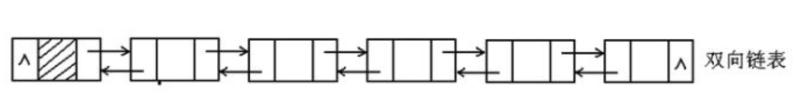
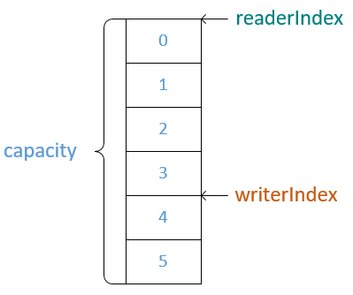
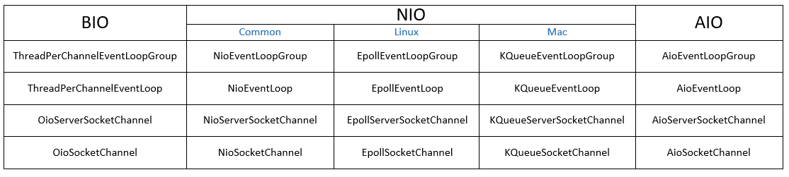
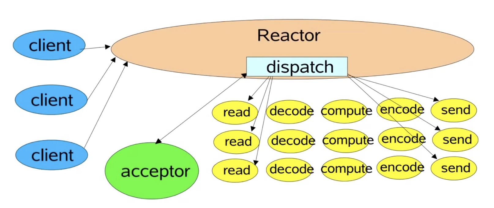
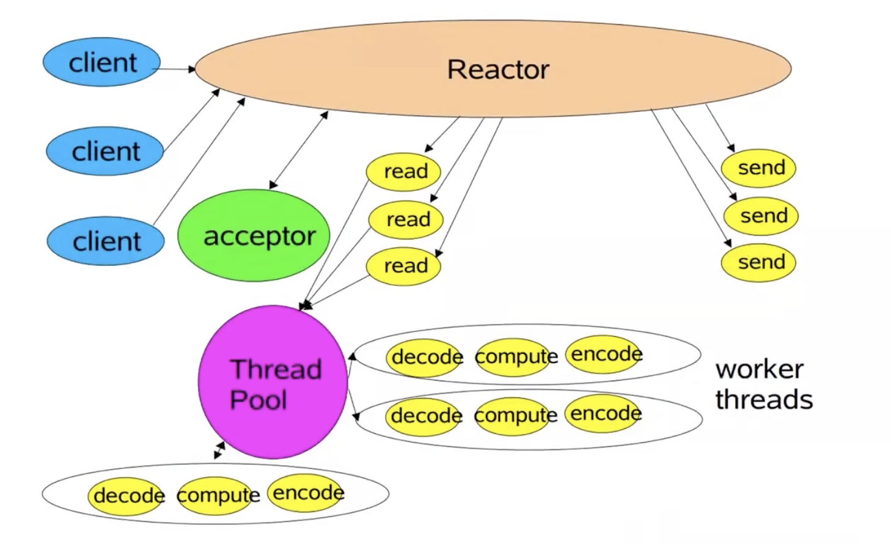
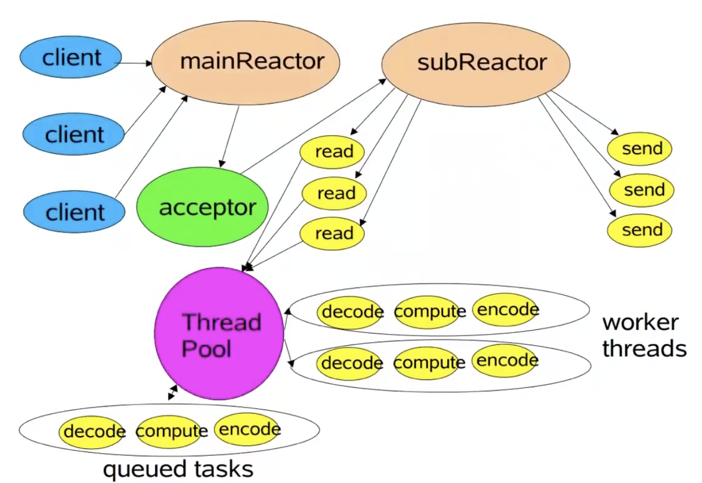
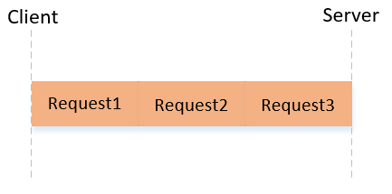

Netty是一个异步的基于事件驱动的网络框架。
1.Netty支持三种IO模型同时支持三种Reactor模式。
2.Netty支持很多应用层的协议，提供了很多decoder和encoder。
3.Netty能够解决TCP长连接所带来的缺陷（粘包、半包等）
4.Netty支持应用层的KeepAlive。
5.Netty规避了JAVA NIO中的很多BUG，性能更好。
1.创建ServerBootstrap服务端启动对象。
2.配置bossGroup和workerGroup，其中bossGroup负责接收连接，workerGroup负责处理连接的读写就绪事件。
3.配置父Channel，一般为NioServerSocketChannel。
4.配置子Channel与Handler之间的关系。
5.给父Channel配置参数。
6.给子Channel配置参数。
7.绑定端口，启动服务。
private void start() {
EventLoopGroup bossGroup = new NioEventLoopGroup();
EventLoopGroup workerGroup = new NioEventLoopGroup();
ServerBootstrap serverBootstrap = new ServerBootstrap();
serverBootstrap
.group(bossGroup, workerGroup)
.channel(NioServerSocketChannel.class) // 配置父Channel
.childHandler(new ChannelInitializer<SocketChannel>() { // 配置子Channel与Handler之间的关系
@Override
protected void initChannel(SocketChannel socketChannel) {
// 往ChannelPipeline中添加ChannelHandler
socketChannel.pipeline().addLast(
new HttpRequestDecoder(),
new HttpObjectAggregator(65535),
new HttpResponseEncoder(),
new HttpServerHandler()
);
}
})
.option(ChannelOption.SO_BACKLOG, 128) // 给父Channel配置参数
.childOption(ChannelOption.SO_KEEPALIVE, true); // 给子Channel配置参数
try {
// 绑定端口，启动服务
System.out.println("start server and bind 8888 port ...");
serverBootstrap.bind(8888).sync();
} catch (InterruptedException e) {
bossGroup.shutdownGracefully();
workerGroup.shutdownGracefully();
}
}
1.创建Bootstrap客户端启动对象。
2.配置workerGroup，负责处理连接的读写就绪事件。
3.配置父Channel，一般为NioSocketChannel。
4.给父Channel配置参数。
5.配置父Channel与Handler之间的关系。
6.连接服务器。
private void start() {
EventLoopGroup workerGroup = new NioEventLoopGroup();
Bootstrap bootstrap = new Bootstrap();
bootstrap.group(workerGroup)
.channel(NioSocketChannel.class) // 配置父Channel
.option(ChannelOption.SO_KEEPALIVE, true) // 给父Channel配置参数
.handler(new ChannelInitializer<SocketChannel>() { // 配置父Channel与Handler之间的关系
@Override
protected void initChannel(SocketChannel socketChannel) throws Exception {
socketChannel.pipeline().addLast(new TimeClientHandler());
}
});
try {
bootstrap.connect(new InetSocketAddress(8888)).sync(); // 连接服务器
} catch (InterruptedException e) {
workerGroup.shutdownGracefully();
}
}
channelActive():当建立一个新的Channel时调用该方法
handlerAdd():当往Channel的ChannelPipeline中添加Handler时调用该方法
handlerRemove():当移除ChannelPipeline中的Handler时调用该方法
channelRead():当Channel有数据可读时调用该方法
exceptionCaught():当在处理事件发生异常时调用该方法
ServerSocketChannel每接收到一个新的连接时都会建立一个SocketChannel，然后调用ChannelInitializer的init方法初始化Channel，方法中配置Channel与Handler之间的关系，然后调用Handler的handlerAdd()和channelActive()方法。
ChannelPipeline底层使用双向链表。

当Channel有数据可读时，会沿着链表从前往后寻找有IN性质的Handler进行处理。
当Channel写入数据时，会沿着链表从后往前寻找有OUT性质的Handler进行处理。
write():将数据写入到缓冲区
flush():发送缓冲区中的数据并进行清空
writeAndFlush():将数据写入到缓冲区,同时发送缓冲区中的数据并进行清空
Channel的writeAndFlush()和flush()方法会从链表的最后一个节点开始从后往前寻找有OUT性质的Handler进行处理。
ChannelHandlerContext的writeAndFlush()和flush()方法会从当前节点从后往前寻找有OUT性质的Handler进行处理。
当SocketChannel可以写入数据时，将会触发写就绪事件，所以一般不能随便监听，否则将会一直触发。
当SocketChannel在写入数据写不进时（缓冲区已经满了），向Selector传递要监听此Channel的写就绪事件，然后强制发送缓冲区中的数据并进行清空，此时将会触发写就绪事件，当Selector处理完写就绪事件后，应当剔除监听此Channel的写就绪事件。
Channel中的所有任务都会放入到其绑定的EventLoop的任务队列中，然后等待被EventLoop中的线程处理。
由于Netty中的所有操作都是异步的，因此一般会返回ChannelFuture对象，用于存储Channel异步执行的结果。
当创建ChannelFuture实例时，isDone()方法返回false，仅当ChannelFuture被设置成成功或者失败时，isDone()方法才返回true。
可以往ChannelFuture中添加ChannelFutureListener，当任务被执行完毕后由IO线程自动调用。

ByteBuf有readerIndex和writerIndex两个指针，默认都为0，当进行写操作时移动writerIndex指针，读操作时移动readerIndex指针。
可读容量 = writerIndex - readerIndex
*只有read()/write()方法才会移动指针，get()/set()方法不会移动指针。
*ByteBuf支持动态扩容。
使用ByteBufAllocator来创建和管理ByteBuf，其分别提供PooledByteBufAllocator和UnpooledByteBufAllocator实现类，分别代表池化和非池化。
*Netty同时也提供了Pooled和Unpooled工具类来创建和管理ByteBuf。
每次使用时都从池中取出一个ByteBuf对象，当使用完毕后再放回到池中。
每个ByteBuf都有一个refCount属性，仅当refCount属性为0时才将ByteBuf对象放回到池中。
ByteBuf的release()方法可以使refCount属性减1（一般由最后一个访问ByteBuf的Handler进行处理）
每次使用时都创建一个新的ByteBuf对象。
如果每次使用ByteBuf后却不进行释放，那么有可能发生内存泄漏，对象池中会不停的创建ByteBuf对象。
非池化的ByteBuf对象能够依赖JVM自动进行回收。
池化和非池化的ByteBufAllocator中都可以创建堆内和堆外的ByteBuf对象。
堆外的ByteBuf可以避免在进行IO操作时数据从堆内内存复制到操作系统内存的过程，所以对于IO操作来说一般使用堆外的ByteBuf，而对于内部业务数据处理来说使用堆内的ByteBuf。
Netty支持BIO、NIO、AIO三种IO模型。

*其中AIO模型只在Netty的5.x版本有提供，但不建议使用，因为Netty不再维护同时也废除了5.x版本，其原因是在Linux中AIO比NIO强不了多少。
只需要将EventLoopGroup和ServerSocketChannel换成相应IO模型的API即可。

EventLoopGroup eventLoopGroup = new NioEventLoopGroup(1);

EventLoopGroup eventLoopGroup = new NioEventLoopGroup();
*默认CPU核数 x 2个EventLoop。

EventLoopGroup bossGroup = new NioEventLoopGroup();
EventLoopGroup workerGroup = new NioEventLoopGroup();
1.写入的数据远小于缓冲区的大小，TCP协议为了性能的考虑，合并后再进行发送。
1.写入的数据大于缓冲区的大小，因此必须拆包后再进行传输（缓冲区已满，强制flush）
2.写入的数据大于协议的MTU（最大传输单元），因此必须拆包后再进行传输。

长连接中可以发送多个请求，同时TCP协议是流式协议，消息无边界，所以有一个很棘手的问题，接收方怎么去知道一个请求中的数据到底是哪里到哪里，以及一个请求中的数据有可能是粘包后的结果，同时多个请求中的数据有可能是半包后的结果。
1.使用短连接，连接开始和连接结束之间的数据就是请求的数据。
2.使用固定的长度，每个请求中的数据都使用固定的长度，接收方以接收到固定长度的数据来确定一个完整的请求数据。
3.使用指定的分隔符，每个请求中的数据的末尾都加上一个分隔符，接收方以分隔符来确定一个完整的请求数据。
4.使用特定长度的字段去存储请求数据的长度，接收方根据请求数据的长度来确定一个完整的请求数据。
FixedLengthFrameDecoder:使用固定的长度
DelimiterBasedFrameDecoder:使用指定的分隔符
LengthFieldBasedFrameDecoder:使用特定长度的字段去存储请求数据的长度
正常情况下双方建立连接后是不会断开的，KeepAlive就是防止连接双方中的任意一方由于意外断开而通知不到对方，导致对方一直持有连接，占用资源。
*建立连接需要三次握手、正常断开连接需要四次挥手。
KeepAlive有三个核心参数
net.ipv4.tcp_keepalive_timeout:连接的超时时间(默认7200s)
net.ipv4.tcp_keepalive_intvl:发送探测包的间隔(默认75s)
tnet.ipv4.cp_keepalive_probes:发送探测包的个数(默认9个)
这三个参数都是系统参数，会影响部署在机器上的所有应用。
KeepAlive的开关是在应用层开启的，只有当应用层开启了KeepAlive，KeepAlive才会生效。
java.net.Socket.setKeepAlive(boolean on);
当连接在指定时间内没有发送请求时，开启KeepAlive的一端就会向对方发送一个探测包，如果对方没有回应，则每隔指定时间发送一个探测包，总共发送指定个探测包，如果对方都没有回应则认为对方不可用，断开连接。
1.KeepAlive参数是系统参数，对于应用来说不够灵活。
2.默认检测一个不可用的连接所需要的时间太长。
1.定时任务
客户端定期向所有已经建立连接的服务端发送心跳检测，如果服务端连续没有回应指定个心跳检测，则认为对方不可用，此时客户端应该重连。
服务端定期向所有已经建立连接的客户端发送心跳检测，如果客户端连续没有回应指定个心跳检测，则认为对方不可用，此时应该断开连接。
2.计时器
连接在指定时间内没有发送请求则认为对方不可用
Netty开启KeepAlive
Bootstrap.option(ChannelOption.SO_KEEPALIVE,true);
ServerBootstrap.childOption(ChannelOption.SO_KEEPALIVE,true);
Netty提供的KeepAlive机制
Netty提供的IdleStateHandler能够检测处于Idle状态的连接。
Idle状态类型
reader_idle:SocketChannel在指定时间内都没有数据可读
writer_idle:SocketChannel在指定时间内没有写入数据
all_idle:SocketChannel在指定时间内没有数据可读或者没有写入数据
直接将IdleStateHandler添加到ChannelPipeline即可，当Netty检测到处于Idle状态的连接时，将会自动调用其Handler的userEventTriggered()方法，用户只需要在该方法中判断Idle状态的类型，然后做出相应的处理。
HTTP的KeepAlive是对长连接和短连接的选择，并不是保持连接存活的一种机制。
HTTP是基于请求和响应的，客户端发送请求给服务端然后等待服务端的响应，当服务端检测到请求头中包含Connection:KeepAlive时，表示客户端使用长连接，此时服务端应该保持连接，当检测到请求头中包含Connection:close时，表示客户端使用短连接，此时服务端应该主动断开连接。
TCP并不是基于请求和响应的，客户端可以发送请求给服务端，同时服务端也可以发送请求给客户端。